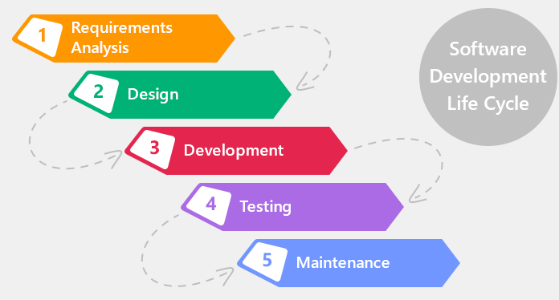

Тестирование - это одна из техник контроля качества (Quality Control), которая включает планирование, составление тестов, непосредственно выполнение тестирования и анализ полученных результатов.
Дефект– это отклонение фактического результата (actual result) от ожидаемого результата (expected result).
По ISTQB:
Error(mistake) - ошибка в коде, которая найдена при статическом анализе кода, т.е. не запуская его на выполнение
Defect(bug/fault) - ошибка найденная при тестирование продукта
Failure - остановка работоспособности системы из-за дефекта
Когда тестирование должно быть окончено
Сроки установленные заранее
Выполнение всех тест – кейсов (статус pass, либо метрики установленные в команде)
Достижение определенного тестового покрытия
Решение менеджмента
Устранены дефекты со статусом Blocker
Принципы тестирования
Тестирование демонстрирует наличие дефектов
Исчерпывающее тестирование недостижимо
Раннее тестирование
Скопление дефектов
Парадокс пестицида
Тестирование зависит от контекста
Заблуждение об отсутствии ошибок
Software Testing Life Cycle
Requirement analysis (анализ требований)
Test Planning (тестовое планирование)
Test case development (написание тестовых сценариев)
Environment Setup (настройка окружающей среды)
Test Execution (тестовое выполнение)
Test Cycle Closure (завершение тестирования)
Quality Assurance
Качество процессов разработки продукта
Предотвращение дефектов
Quality Control
Assurance
Поиск дефектов в готовом продукте
Поиск дефектов
Тестовая документация и UI controls
UI controls
CheckBox - Позволяет пользователю выбрать несколько параментров
Radio button - Позволяет пользователю выбрать только один вариант
Dropdown lists - Раскрывающейся список в котором можно выбрать один елемент за раз
Buttons - При нажатии на кнопку происходит открытие новой вкладки в соответствии с выбранной кнопкой.
Date and time pickers
Pagination
Image Carousel
Notifications
Pop up
Способы визуализации проекта
WireFrames
Moqups
Prototype
Техническое задание — исходный документ на проектирование технического объекта (изделия), устанавливает основное назначение разрабатываемого объекта, его технические характеристики, показатели качества и технико-экономические требования, предписание по выполнению необходимых стадий создания документации (конструкторской, технологической, программной и т. д.) и её состав, а также специальные требования. Является юридическим документом — как приложение включается в договор между заказчиком и исполнителем на проведение проектных работ и является его основой: определяет порядок и условия работ, в том числе цель, задачи, принципы, ожидаемые результаты и сроки выполнения.
Software Requirements Specification or Product requirement document (SRS/PRD)- специальная документация для ПО которая содержит в себе информацию о том, как должна себя вести система, какие функции должна выполнять, какую нагрузку должна выдерживать и тд.
Release notes - Замечания к версии программного продукта — часть документации программного обеспечения, в которой описываются изменения между выпускаемой и предыдущей версиями этого ПО. Могут составляться для внешних пользователей, для отдела тестирования, документирования, маркетинга.
Виды тестовой документации
Тест кейсы - это профессиональная документация тестировщика, последовательность действий направленная на проверку какого-либо функционала, описывающая как прийти к фактическому результату.
Тестовый случай (Test Case) - это артефакт, описывающий совокупность шагов, конкретных условий и параметров, необходимых для проверки реализации тестируемой функции или её части.
Requirement Traceability Matrix - документ в виде таблицы, описывающий отношение требований к созданным тест кейсам. Главной задачей является показать тестовое покрытие тестового приложения.
Тест Сьют это набор тест кейсов, которые объединены тем что относятся к одному тестируемому модулю, функциональности, приоритету или одному типу тестирования. Каждый тест сьют состоит из более чем одного тест кейса и зачастую выполняется всей «пачкой» в процессе тестирования.
Чек-лист (check list) — это документ, описывающий что должно быть протестировано. При этом чек-лист может быть абсолютно разного уровня детализации. Насколько детальным будет чек-лист зависит от требований к отчетности, уровня знания продукта сотрудниками и сложности продукта
Тест план (Test Plan) - это документ, описывающий весь объем работ по тестированию, начиная с описания объекта, стратегии, расписания, критериев начала и окончания тестирования, до необходимого в процессе работы оборудования, специальных знаний, а также оценки рисков с вариантами их разрешения.
Test summary report – это документ который описывает работу QA за какой то промежуток времени. Описывается количество пройденных test cases их статус после прохождения, coverage. Так же описывается количество найденных дефектов, их статусы и процентное соотношение.
Методологии разработки программного обеспечения, Жизненный цикл ПО, введение в agile (Scrum/Kanban)
Software Development Life Cycle

Классические модели разработки ПО
Каскадная модель (Waterfall model) - Стабильность требований, на каждом этапе формируется законченный набор проектной документации, все этапы работ выполняются в логической последовательности
V – модель (V - model) - это улучшенная версия классической каскадной модели. Здесь на каждом этапе происходит контроль текущего процесса, для того чтобы убедится в возможности перехода на следующий уровень.